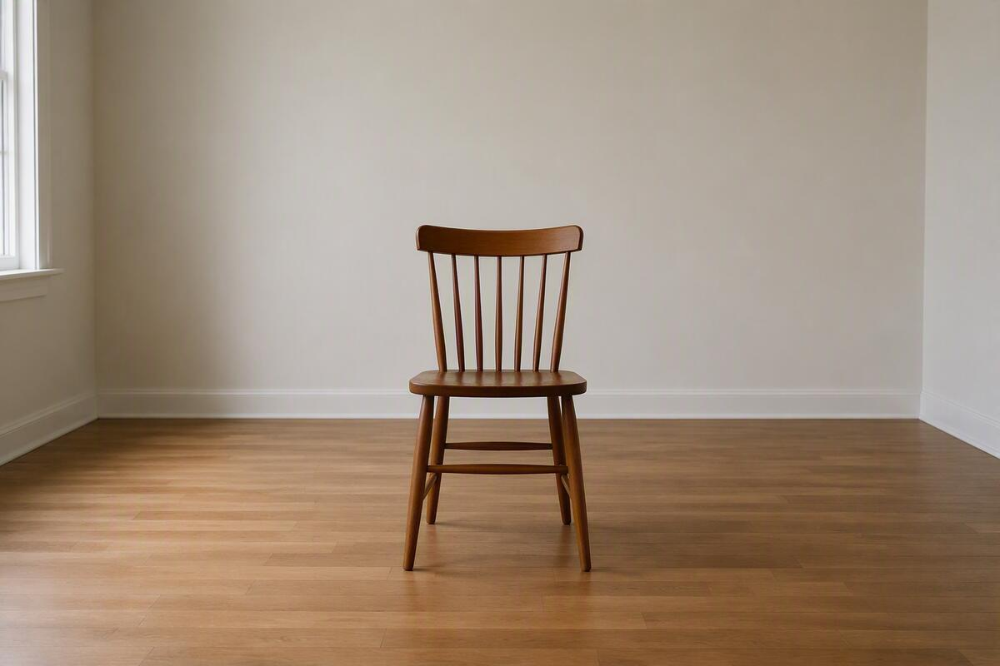
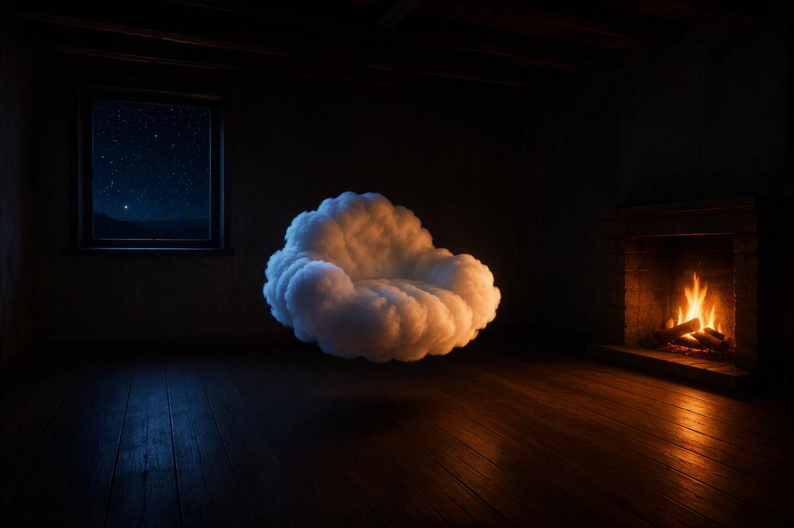
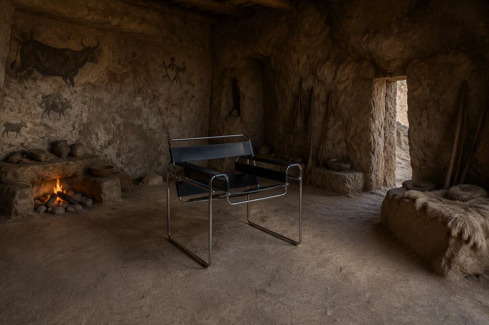
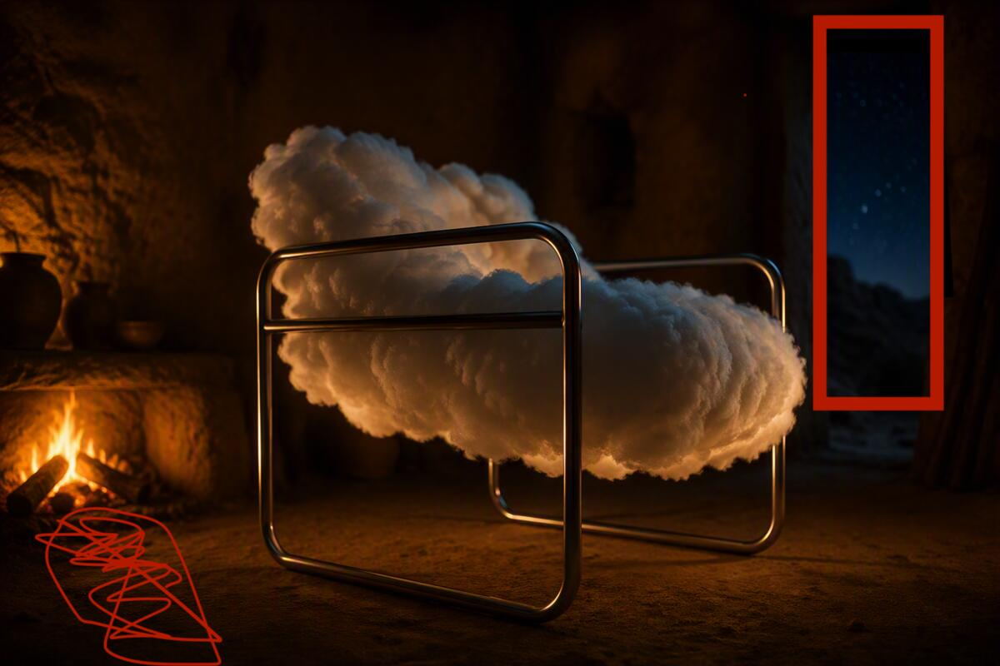

The bare prompt

a chair in the middle of a room.
The mood

a floating cloud like chair, in the middle of a midnight room, lights from stars and the wood fire lights up the room and everything else is empty.
A different chair, a different setting

a modernist techy chair in the middle of a stone age room.
Combining the two, plus the camera

a modernist techy chair in the middle of a stone age room, a floating cloud like chair, in the middle of a midnight room, lights from stars and the wood fire lights up the room and everything else is empty. Shot from the left corner of the room with a close up on the side of the chair in 16:9 format, f stop 1.2
The final pass

Ultra-realistic cinematic photography of a floating cloud-shaped chair suspended in the center of a prehistoric stone-age cave dwelling at midnight. The chair appears soft and luminous like a dense glowing cloud, with subtle modern minimalist structure hidden within. Shot from the far left side corner of the room, side-profile view of the chair, 16:9 aspect ratio. Warm orange firelight from a small stone hearth on the left illuminates the cave interior, creating dramatic shadows across rough rock walls. Ancient cave paintings, pottery, animal hides, and primitive stone-age spears and weapons rest along the left side of the cave. Through a narrow doorway on the right, a deep blue night sky filled with sharp, highly visible stars is clearly visible, crisp and bright. The room is otherwise empty, emphasizing the chair as the focal point. Photorealistic textures, detailed rock surfaces, atmospheric lighting, soft volumetric glow from the cloud chair, shallow depth of field, f/1.2, cinematic composition, warm firelight contrasted with cool moonlit starlight, ultra-detailed, HDR, award-winning interior photography, natural color grading, 8K resolution.